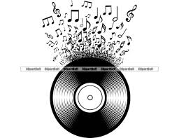
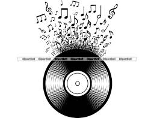

The best music of the 80s
The music of the 80s was a form of expression for young people of the time, and reflected the social and cultural changes that were occurring around the world. The most important pop songs from each of the 80s reflect the diversity and creativity of the music of that decade.
 
